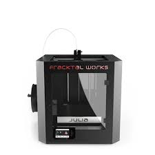
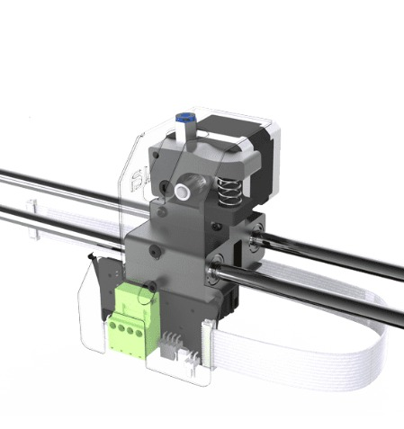
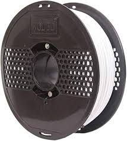

Module-4: 3D Printing.
3D printing, also known as additive manufacturing, revolutionizes traditional manufacturing processes by creating objects layer by layer from digital designs. This technology allows for the production of complex geometries and intricate structures with high precision and customization. In 3D printing, a variety of materials including plastics, metals, ceramics, and even food ingredients can be used as the building blocks for creating objects. Industries ranging from aerospace, automotive, and healthcare to fashion, architecture, and consumer goods have adopted 3D printing for prototyping, production, and customization purposes. The versatility, speed, and cost-effectiveness of 3D printing continue to drive innovation across various sectors, promising a future where manufacturing is more agile, sustainable, and tailored to individual needs.
Fracktal Works 3D Printing Machine
The 3D Printer Model in Lab is Julia Extented 25*25*30(cm).
Fracktal Works specializes in cutting-edge 3D printing technology. Their machines are renowned for high precision and quality output, catering to various industries like aerospace, automotive, and healthcare. Fracktal's printers boast advanced features such as multi-material compatibility, large build volumes, and fast print speeds, making them versatile and efficient for diverse applications. With a commitment to innovation and customer satisfaction, Fracktal Works continues to lead the way in the 3D printing industry.
Specification
Specifications:
Bed Size:250 mm x 250 mm x 300 mm
Print Technology: Fused Deposition Modelling (FDM)
Filament Diameter: 1.75mm
Nozzle Diameter: 0.4mm
Nozzle Temperatures:Upto 240 °C
Bed Temperature: Upto 110 °C
Compatible Materials:ABS, PLA, Tough PLA, PLA+, PETg, PVA, PVA+,BVOH,Polycarbonate, Nylon 12*, Carbon Fiber
Nylon*, Carbon Fiber PLA
Supported File Types: STL, OBJ
File Transfer :USB Pen Drive, WIFI, LAN
Direct Extruder
A Direct Drive extruder applies maximum pushing force to the printing filament with accurate extrusion and retraction response for best print quality. This extruder is essential for printing Flexible Materials which wouldn’t be possible without it.A direct extruder is a key component in 3D printing, responsible for feeding filament directly into the hotend where it is melted and deposited layer by layer to create objects. Unlike a Bowden extruder, which utilizes a remote motor to push filament through a tube to the hotend, a direct extruder is mounted directly above or adjacent to the hotend, reducing the distance the filament travels and providing more precise control over filament extrusion. This setup typically results in better print quality, especially with flexible filaments, as there is less opportunity for filament to buckle or deform during extrusion. Direct extruders are commonly used in desktop 3D printers and are favored by users seeking enhanced accuracy, reliability, and versatility in their printing processes.
Filament
Here We use WOL 3D Filament PLA PRO+ (1.75mm, daisy white)Filament is the primary material used in 3D printing, serving as the raw material for creating objects layer by layer. It comes in spools of various types, including thermoplastics like PLA (Polylactic Acid), ABS (Acrylonitrile Butadiene Styrene), PETG (Polyethylene Terephthalate Glycol), and TPU (Thermoplastic Polyurethane), as well as specialty materials like wood-fill, metal-fill, and carbon fiber-infused filaments. Each type of filament offers unique properties such as strength, flexibility, durability, and aesthetic appeal, making them suitable for different applications and requirements. Filaments are loaded into the 3D printer's extruder, where they are heated and extruded onto the print bed or previous layers to build up the desired object. Choosing the right filament type and settings is crucial for achieving optimal print quality and functionality, and experimentation with different materials opens up endless possibilities for creative and practical applications in 3D printing.
Ultimaker Cura Software

Ultimaker Cura is a free, open-source software widely used for slicing 3D models and preparing them for 3D
printing. Developed by Ultimaker, a prominent manufacturer of 3D printers, Cura supports a wide range of 3D
printers, not just Ultimaker machines. Here's a brief overview of its features:
Slicing: Cura takes 3D models in STL, OBJ, or other formats and slices them into thin horizontal layers,
generating the toolpaths that the 3D printer will follow.
Customization: Users can customize print settings such as layer height, infill density, print speed, and
support structures to achieve the desired print quality and properties.
Preview: Cura provides a visual preview of the sliced model, allowing users to inspect each layer and
identify potential issues before printing.
Multiple Printer Support: While Ultimaker Cura is developed by Ultimaker, it supports a wide range of 3D
printers from various manufacturers, making it a versatile option for many users.
Plugin System: Cura features a plugin system that allows users to extend its functionality with additional
features and tools.
Community and Updates: Ultimaker Cura benefits from an active user community, which contributes to its
ongoing development and improvement. Regular updates ensure that the software stays current with the latest
advancements in 3D printing technology.
Overall, Ultimaker Cura is a powerful, user-friendly tool that simplifies the process of preparing 3D models
for printing, making it accessible to beginners while offering advanced features for experienced users.